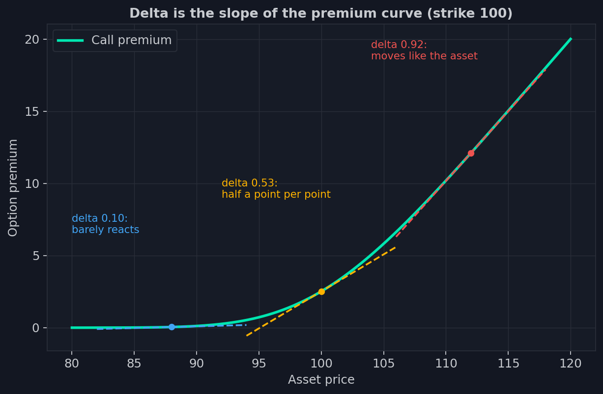
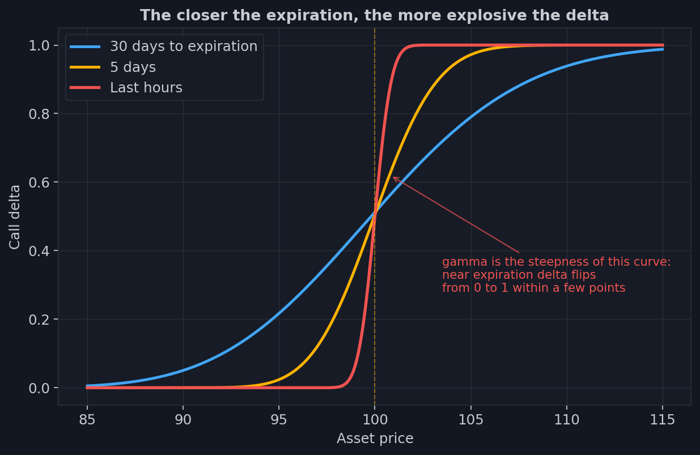
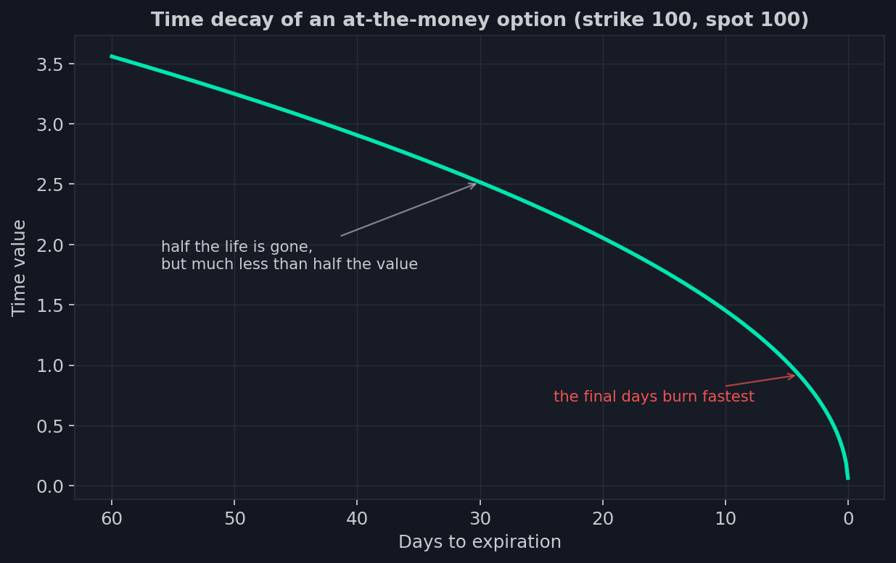

3. Las griegas: el idioma de la sensibilidad
Mira el salpicadero de un coche. Ni un solo indicador te muestra dónde estás — para
eso está la ventanilla. Los indicadores muestran otra cosa: a qué velocidad cambia
tu situación y qué le pasará dentro de un minuto si no tocas nada.
Una mesa de opciones está construida igual. El precio de una opción es «dónde
estamos ahora», y caduca cada segundo. Lo que les importa a los profesionales son
los indicadores: cómo reaccionará la prima si el índice se mueve un punto, si pasa
un día, si el mercado se pone nervioso. Esas sensibilidades se llaman las griegas —
por las letras del alfabeto griego con que se etiquetan — y a lo largo del curso
las llamaremos por sus nombres internacionales: delta, gamma, theta, vega. Para
nuestro curso las griegas no son una abstracción: dentro de dos lecciones
resultará que literalmente dictan las operaciones a los mayores participantes del
mercado, y nuestros indicadores miden esas operaciones.
Antes de las presentaciones, una propiedad compartida. Cada griega responde a la
pregunta «qué cambia si cambia esta única cosa — todo lo demás igual». En la vida
real todo lo demás nunca es igual: precio, tiempo y volatilidad se mueven a la
vez, y la prima es la suma de todos los efectos juntos. Las griegas son la
descomposición del movimiento en ejes.
Delta: la pendiente
Delta responde a la primera pregunta: cuánto se moverá la prima si el
subyacente se mueve un punto.

La curva del gráfico te resulta familiar de la lección anterior — la prima de un
call contra el precio del activo. Delta es la pendiente de esa curva en el punto
donde está el mercado ahora; tres tangentes discontinuas la muestran en tres
regiones. Muy fuera del dinero (el punto azul) la pendiente es casi cero: delta
0,10 — el activo se mueve, la opción apenas se inmuta; a un boleto de lotería le
interesan poco las noticias. En el dinero (amarillo) la pendiente es 0,53: la
prima captura aproximadamente la mitad del movimiento. Muy dentro del dinero
(rojo) — 0,92: la opción ya casi no se distingue del propio activo.
Delta tiene tres lecturas, y necesitaremos las tres.
Sensibilidad: delta 0,40 — la prima captura el cuarenta por ciento del
movimiento del activo.
Equivalente de posición: un bloque de 1.000 calls con delta 0,40 reacciona al
mercado como 400 unidades del propio activo. Esta aritmética parece un detalle
contable — pero en realidad es la fórmula con la que se cubren los market makers,
y volveremos a ella dentro de una lección como la ecuación maestra del curso.
Probabilidad aproximada: delta se acerca a las probabilidades de que la opción
termine dentro del dinero. Delta 0,10 — el mercado le da más o menos una
posibilidad entre diez. La aproximación es imprecisa, pero para una lectura rápida
de la cadena cumple.
Los calls tienen deltas de 0 a 1; los puts, de 0 a −1: un put gana valor cuando el
activo cae.
Gamma: la curvatura
Vuelve a mirar el gráfico de delta. La pendiente no es constante: la curva de la
prima está doblada, y a medida que el precio sube, una opción fuera del dinero se
convierte gradualmente en una dentro del dinero, con su delta reptando de 0,10
hacia 0,90. La velocidad de esa transformación es la segunda griega.
Gamma — cuánto cambia delta cuando el activo se mueve un punto. Si delta es la
velocidad, gamma es la aceleración.

Aquí los ejes ya no muestran la prima sino la propia delta contra el precio del
activo. La curva azul es un mes antes del vencimiento: delta fluye de 0 a 1
suavemente, tomándose veinte puntos de camino. La amarilla es a cinco días: la
transición se ha comprimido. La roja son las últimas horas de vida de la opción:
delta salta de cero a uno en un par de puntos. Gamma es la inclinación de esa
transición, y crece explosivamente hacia el vencimiento. La lógica es simple: a un
mes del final, la pregunta «¿dentro del dinero o no?» se decidirá cien veces más —
no hay prisa; en la última hora, cada punto de precio sella el destino de la
opción para siempre — y delta se sacude junto con el precio.
Recuerda la curva roja. Cuando lleguemos a las opciones que viven un solo día — y
esas son hoy las opciones más negociadas del S&P 500 — todo su drama resultará
estar dibujado justo aquí: un mercado compuesto enteramente de «últimas horas».
Para el comprador de la opción, gamma es un regalo: su delta crece sola cuando
acierta y mengua sola cuando se equivoca. Pero para quien está obligado a mantener
su riesgo total en cero, gamma es fuente de un ajetreo forzoso sin fin. Quién es
ese desdichado y por qué su ajetreo aparece en el gráfico de futuros — lección 4.
Theta: el reloj
Theta — cuánta prima pierde una opción por cada día que pasa con el mercado
inmóvil. Esta es la griega que «robó» el dinero aquel lunes del comienzo de la
lección anterior: el valor temporal es mercancía perecedera.

Fíjate en que el decaimiento no es lineal. En la primera mitad de su vida, la
opción entrega bastante menos de la mitad de su valor temporal, mientras que los
últimos días arden a ritmo acelerado — cuanto más cerca el final, más cuesta cada
día de espera. Para el comprador, theta es el alquiler que paga por una
posibilidad. Para el vendedor, es ingreso: como una aseguradora, se embolsa un
trozo de prima prepagada cada día tranquilo. Pero no confundas theta con una
renta vitalicia: gotea mientras el mercado está en calma, y un movimiento brusco
devuelve al comprador, vía delta y gamma, lo que theta llevaba semanas recaudando.
Vega: sensibilidad al ánimo
Vega — cuánto cambia la prima cuando la volatilidad implícita se mueve un
punto porcentual. Recuerda las campanas de la lección 2: la campana se ensancha —
todas las posibilidades se encarecen a la vez. Vega mide cuán sensible es una
opción concreta a eso.
El guion clásico: la víspera de una publicación importante, el índice está quieto
mientras las opciones se encarecen — el mercado infla la campana a la espera del
veredicto. A la mañana siguiente sale la noticia, la incertidumbre colapsa, la IV
cae — y las opciones se abaratan aunque el mercado se haya movido en la dirección
«correcta». El comprador acertó la dirección y aun así perdió: vega se comió más
de lo que delta ganó. En el mercado de opciones puedes tener razón sobre el precio
y equivocarte sobre la incertidumbre.
La segunda fila: nombres para más tarde
Delta, como vimos, cambia cuando el precio se mueve — eso es gamma. Pero delta
tiene dos enemigos silenciosos más. Cambia cuando la volatilidad se desplaza — ese
efecto se llama vanna. Y cambia por el mero paso del tiempo — eso es
charm: mira otra vez el gráfico de gamma — con cada día que pasa, la curva de
delta se vuelve más empinada, lo que significa que la delta de cada opción está
derivando hacia algún lado incluso con el mercado congelado.
Por ahora son solo dos nombres, y es pronto para conocerlos de verdad: su poder no
se muestra en una opción suelta, sino en manos de quien las sostiene por cientos
de miles. Dos de nuestros indicadores llevan sus nombres, y en la lección 11
quedará claro por qué.
Para la mayoría de los participantes, las griegas son información de consulta:
revisar, sopesar el riesgo, decidir. Pero hay un jugador en el mercado para quien
las griegas no son una consulta sino una orden. Él no elige sus posiciones — se
las traen las operaciones de otros. Está obligado a mantener su riesgo en cero — y
las griegas le dicen cuántos futuros comprar o vender ahora mismo, le guste o no.
Conócelo en la próxima lección: el market maker — el gran jugador más predecible
de los mercados financieros y el protagonista de todo nuestro curso.
- Las griegas son las sensibilidades del precio de la opción: delta al precio del activo, gamma a la velocidad de cambio de delta, theta al tiempo, vega a la volatilidad.
- Delta es también un equivalente de posición: 1.000 calls con delta 0,40 se comportan como 400 unidades del activo — la fórmula con la que se cubren los market makers.
- Gamma crece explosivamente hacia el vencimiento: en las últimas horas delta salta de 0 a 1 en un par de puntos.
- Vanna y charm mueven la delta sin que el precio se mueva — por un desplazamiento de la volatilidad y por el mero paso del tiempo.